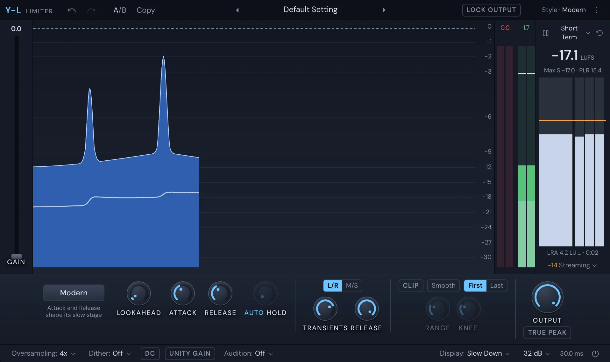

Mix
Y-L
Y-L is a limiter: it holds the sound under a ceiling you set, however hard you push it. It shows what it takes away as it scrolls by, meters the loudness against a target, can clip before it limits, and keeps the ceiling between the samples with True Peak. Put it last on the master, or on a track that needs its peaks caught.

Get started
- Put Y-L in the last slot of the Master track (see Built-in effects). It opens on Default Setting: the Modern style, with a ceiling just under 0 dB.
- Set Output to your ceiling. Turn on True Peak if the song is going to a streaming service; −1 dBTP is a safe ceiling.
- Play the loudest part of the song and push Gain up until it's as loud as you want, watching the red reduction at the top of the display.
- Pick a Style that sounds right, and check the loudness panel against your target.
The level display
The display scrolls from right to left:
- Pale fill: the input, after Gain.
- Deep blue fill with a light line: the output.
- Orange from the top: what the clip stage takes away.
- Red from the top: what the limiter takes away.
- A thin line: the loudness, coloured by how close it is to the target.
- Dashed line: the ceiling.
The display only shows; there's nothing to drag in it. Pick how it moves under Display in the bottom bar.
Gain
Gain is the tall slider at the left of the display, with its value above it. It pushes the sound into the limiter, from 0 up to 30 dB. The higher it goes, the louder the result and the more the limiter works.
The main controls
The controls sit under the display.
Style: how the limiter moves. Click it for the menu; each style has a line on what it's for.
Style What it does Transparent Clean, with the least latency of the master styles. For masters that need a few dB. Punchy A slower recovery you can hear pump. Vocals, bass, beat music. Dynamic Turns hits up before limiting them, so they keep their snap. Allround Lets go only once a sound has ended. When you're unsure. Aggressive Near clipping: dense and loud, a little grit on the hits. Modern Clean and loud at once, with the bass kept smooth. Bus Slow ramps and a pump. Glue on a drum bus. Safe Never distorts, at the price of loudness. Spit A fast, hard brickwall for bite on a vocal, with about 1 ms of latency. Lookahead: how far ahead the limiter looks to meet a peak gently. Its range depends on the style.
Attack and Release: how the slow part of the limiter moves. Aggressive and Spit have no slow part, so these are greyed out there.
Hold: how long it holds before letting go. AUTO sets it to half the bass's period, so a bass note isn't distorted.
Stereo: how the two sides are limited.
- L/R: left and right, linked by the Transients and Release knobs: how much the sides move together on hits and as they let go.
- M/S: the side is turned down first, so the centre (the kick, the 808, the vocal) stays put. Side Floor sets how far the side can go.
Output: the ceiling. It reads Output (dBTP) when True Peak is on.
True Peak: holds the ceiling between the samples too, as streaming services ask.
The clip stage
Turn on Clip for a clipper before the limiter. It shaves the sharpest peaks so the limiter has less to do, which is how loud masters are made.
- The shape button: Hard (a straight cut, the most loudness and the most edge), Smooth (a rounded knee, the default), Soft (rounds the peaks from well under them), Converter (a converter driven over) or Master (a soft clipper, as a DAW's master has).
- First or Last: clip, then limit; or limit, then clip at the ceiling.
- Range: how much the clipper can take.
- Knee: how round the knee is. Only Smooth has one.
Knobs
Drag a knob up or down (⇧ for fine), or scroll over it. Double-click to type a value. ⌘-click or ⌥-click resets it. Right-click for Reset, Type in value… and its automation.
Meters
The meters at the right show the gain reduction, in red from the top, and the output of each side. The numbers over them:
- Gain reduction: the most it has taken away. Click it to reset.
- Output peak: the highest peak out. It's green as a true peak, orange over the Output level and red over 0 dBTP. Click it to reset.
Loudness
The loudness panel at the right measures the song as it plays.
- The big number: the loudness in LUFS, or in LU from the target if you've chosen that. Under it, the maxima and the peak-to-loudness ratio, then bars for Momentary, Short Term and Integrated against the target, then the loudness range.
- The time scale menu: Momentary, Short Term or Integrated (the whole song so far). With Integrated you also choose Show Max Short Term or Show Max Momentary. Auto-Reset when play starts starts the measurement again each time you press play.
- Pause: stops Integrated, the range and the maxima; the meters carry on.
- Reset: starts Integrated, the range, the maxima and the peak readouts again.
- The target menu, at the bottom: the loudness you're aiming for, from −6 to −24 LUFS, each named for where it's going. The panel colours the loudness by how close it is. The menu also holds Scale +9 / Scale +18 and Relative to the target (LU).
The bottom bar
- Oversampling: Off to 16x. Fewer peaks between the samples, a little more latency.
- Dither: Off, or 16 to 24 bits, with Noise shaping. Use it only last in the chain, before a 16-bit file.
- DC: removes DC offset (a 1.5 Hz high-pass).
- Unity Gain: takes Gain back off what you hear, so you judge the sound and not the loudness.
- Audition: Off, or hear only what's taken away: all of it, the clip stage's share or the limiter's.
- Display: how the level display moves: Slow Down, Fast, Slow, Infinite or Off.
- Meter scale: 16, 32 or 48 dB, or K-12, K-14 and K-20, with True peak metering.
- The latency, in ms. The Mixer delays the rest of the song to match.
- Bypass: turns Y-L off, keeping its latency.
The top bar has Undo, Redo, A/B with Copy, the presets, Lock Output and the ⋮ menu: Reset to the default setting, Copy state and Paste state.
Presets
The presets are in folders: Master, Vocal, Drums and bass and Delivery. Master presets go from clean to loud; Vocal ones catch a vocal's peaks; Drums and bass ones clip an 808 or glue a drum bus; Delivery ones set the ceiling and loudness a place asks for, such as Broadcast EBU R 128 or CD Master. Once you change a setting, the preset's name reads Custom.
Turn on Lock Output and presets leave Output, True Peak and the dither alone. Set your ceiling once, then try presets for the sound.
Automation
Gain, Output, Attack, Release, Hold, Transients, Release (link), Side Floor, Range and Knee can be automated. Lookahead can't. Right-click the control, or touch it and click Automate "…" in the title bar. See Automation.
Something here wrong or missing? Tell us.